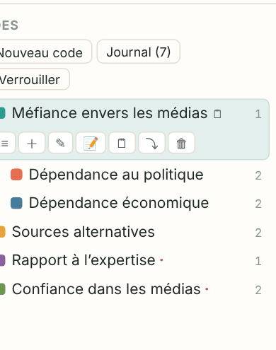
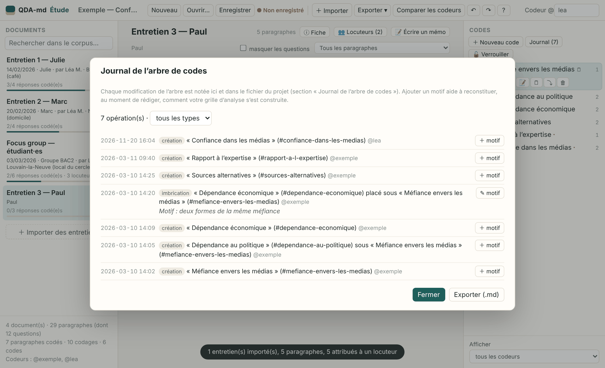

L’arbre de codes¶
Les codes sont rangés en arbre : un code peut avoir des sous-codes. Cliquez sur un code pour le rendre actif et afficher ses actions.

| Action | Effet |
|---|---|
| ≡ | Voir les extraits du code (aussi par double-clic) |
| ＋ | Ajouter un sous-code |
| ✎ | Renommer (l’identifiant dans le fichier ne change pas : les codages restent attachés) |
| 📝 | Écrire la définition |
| 🗒 | Écrire le mémo du code |
| ⤵ | Fusionner dans un autre code : tous ses codages passent au code choisi |
| 🗑 | Supprimer : ses codages sont retirés, ses sous-codes remontent d’un niveau |
Réorganiser : glissez un code sur un autre — au milieu de la ligne pour l’y ranger comme sous-code, au-dessus ou en dessous pour le placer à côté. La zone « Déposer ici… » le remet au premier niveau.
Définition et mémo¶
- La définition dit quand appliquer le code : ce qu’il désigne, un exemple typique, ce qui n’en relève pas. Elle garantit un codage constant et rend la comparaison entre codeurs possible. Un point orange signale un code sans définition.
- Le mémo recueille vos réflexions d’analyse sur ce code : interprétations, hypothèses, liens avec vos lectures, cas limites. Il évolue librement.
Le journal de l’arbre¶
Le bouton Journal liste toutes les opérations sur l’arbre — création, renommage, définition, imbrication, fusion, suppression — avec la date et l’auteur·e. Un motif peut être indiqué au moment de la fusion ou de la suppression, ou ajouté ensuite. Au moment de rédiger, ce journal permet de raconter comment votre grille d’analyse s’est construite.

Verrouiller l’arbre¶
Le bouton 🔓 Verrouiller fige l’arbre : on peut encore coder avec les codes existants et écrire des mémos, mais plus créer, renommer, définir, déplacer, fusionner ou supprimer de codes. Un code de déverrouillage est facultatif.
C’est utile quand l’enseignant·e distribue un livre de codes imposé, ou quand un binôme a stabilisé son arbre avant de coder chacun de son côté.
Un verrou pédagogique
Le fichier projet reste un texte modifiable à la main : le verrou évite les modifications par erreur, pas un contournement volontaire. N’utilisez jamais un vrai mot de passe comme code de déverrouillage.